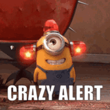
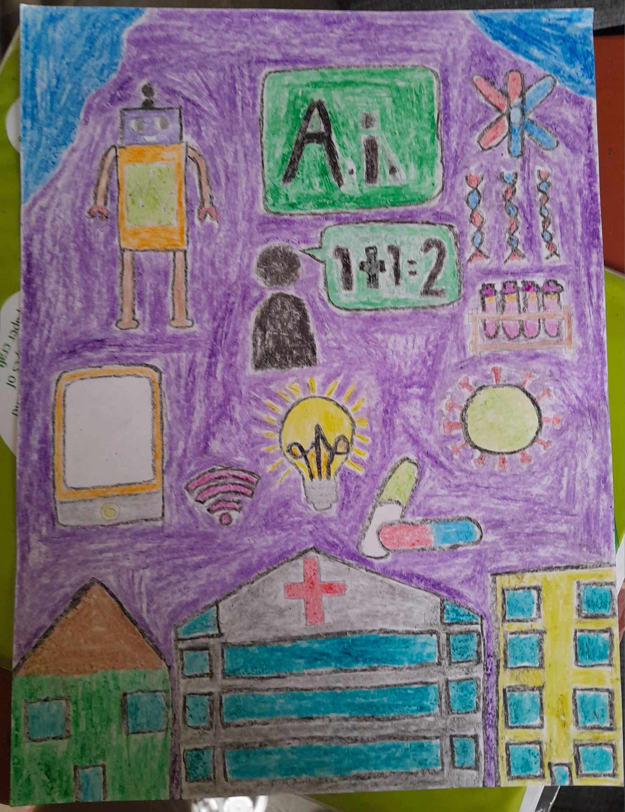
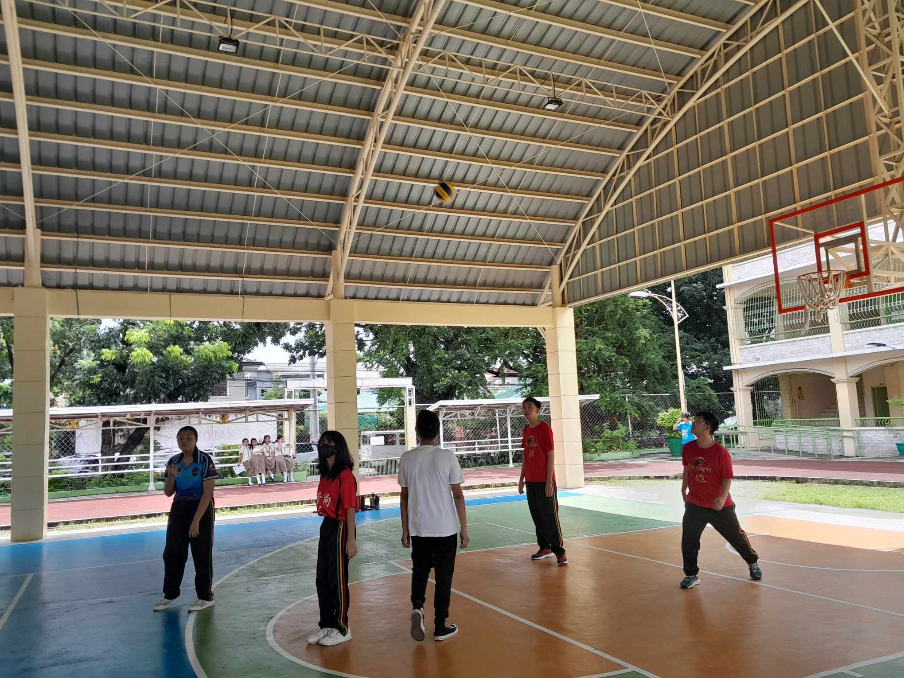
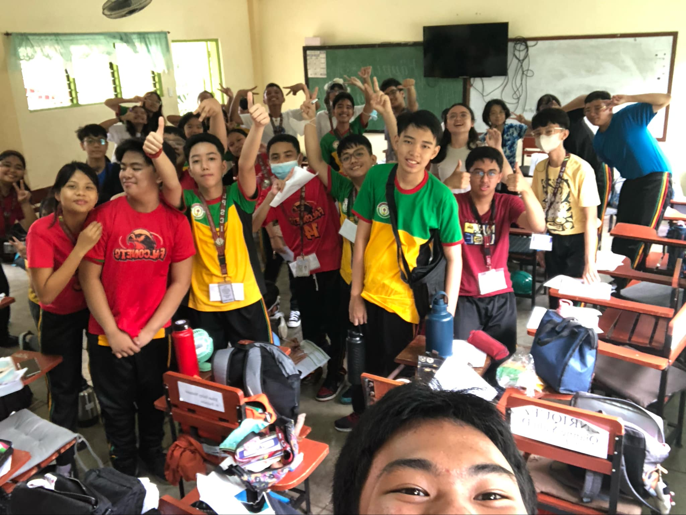

Before you start reading, you can listen to this music first:

In this picture, my classmates and I were practicing for our Performance Task in Science wherein we did a human representation of what our circulatory and respiratory system do.

On this day, we celebrated the beginning of Buwan ng Wika which was August 5, 2024.

We presented our Performance Task in Science on August 8, 2024.

We can see my friend in this picture performing his declamation in the school's auditorium (RJ was our representative) on August 20, 2024.

In this picture, we celebrated the Foundation Day of LPSCI and its 15th Founding Anniversary on August 24, 2024.

On this day, LPSCI held a program for the closing of Buwan ng Wika on August 30, 2024.

This picture shows our final output for the stain glass project in Art, which was submitted on August 30, 2024 and graded on September 6, 2024.

This collage shows all of our picture taking the TOFAS on September 5, 2024.

In this picture, we can see the poster I did for the opening of the Science Month on September 6, 2024.

We had our volleyball matches during September 12 and 13, 2024 as a Performance Task in MAPEH.

Unfortunately, we do not have a real photo for our debate in Filipino, however we do have a selfie of us after the debate taken by Riz Dancal on September 13, 2024.
This video shows our music video in MAPEH that tackles commmunity health problems which we finished on September 22, 2024.